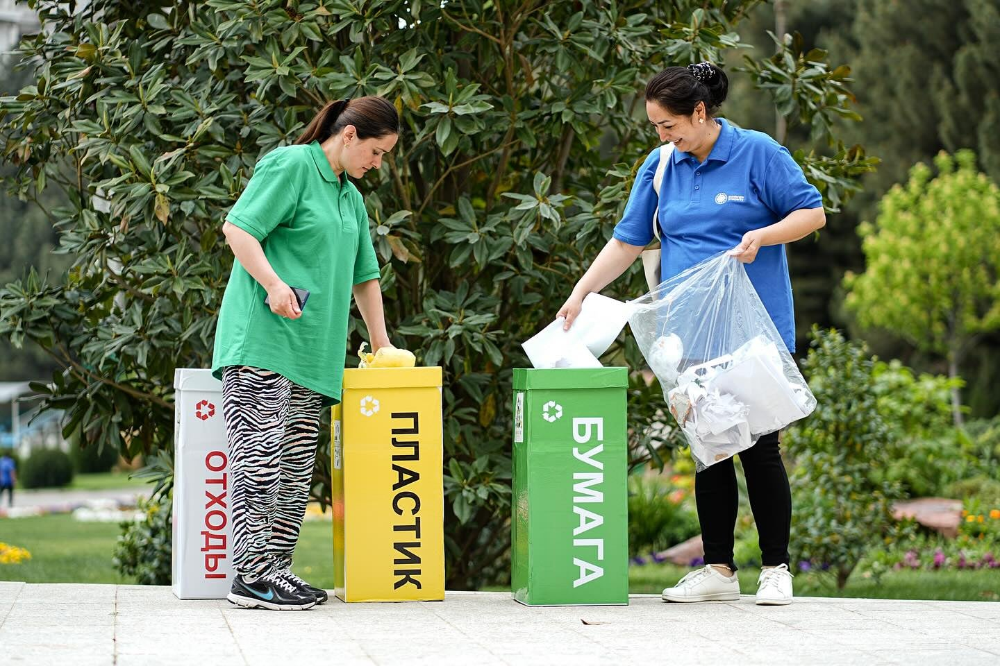
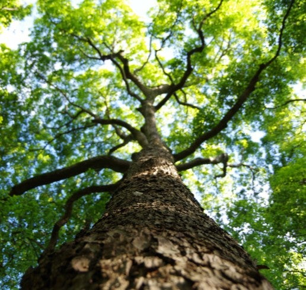
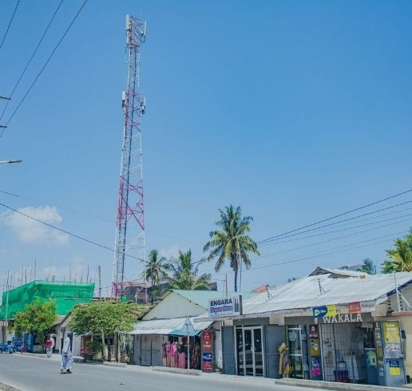
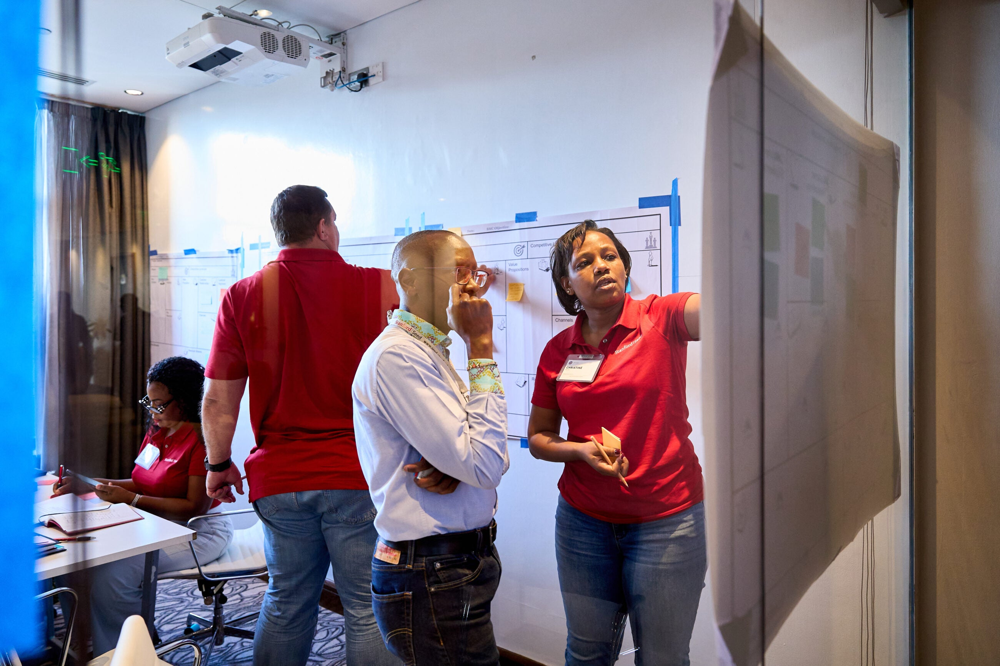

Partner with ANDE to support small and growing businesses creating jobs and economic opportunity in emerging markets. Access collaborative funding opportunities, portfolio insights, and evidence-based approaches to measuring real-world impact.
Multiply your impact through collaborative funding with other donors, extending your resources and reaching more small businesses and beneficiaries.
Access evidence-based insights on what works in SGB support, informed by ANDE's research and the collective expertise of 250+ member organizations.
Measure real outcomes using standardized impact frameworks and access to data from programs you support, demonstrating tangible change.
Connect with peers in the development and philanthropic community to learn best practices, co-fund initiatives, and strengthen the ecosystem together.
Connect and collaborate with fellow donors through:
Participate in or initiate collaborative funding pools that:
Access evidence to guide funding decisions:
Demonstrate and improve outcomes through:
Donors partnering with ANDE are creating measurable change at scale:



Partner with ANDE to support small and growing businesses creating jobs and economic opportunity across emerging markets. Join our network of 100+ donor organizations.
ANDE provides standardized impact measurement frameworks, tools, and access to outcome data from programs in our network. This enables donors to demonstrate the real-world impact of their investments in SGB support.
Yes. ANDE facilitates collaborative funding pools and co-funding arrangements among donors. This allows you to extend your reach, reduce risk, and create larger-scale impact through partnerships with peers.
ANDE members include BDS providers, investors, research organizations, government agencies, and other ecosystem players. Donors can support specific types of organizations or fund systems-level initiatives that strengthen the entire SGB ecosystem.
ANDE members operate in 150+ countries across Africa, Latin America, Asia, and beyond. Donors can target specific regions or support programs globally through ANDE's network.
Supporting SGBs directly advances multiple SDGs including job creation (SDG 8), poverty reduction (SDG 1), gender equality (SDG 5), and climate action (SDG 13). ANDE helps donors track contributions to specific SDG outcomes.
ANDE offers flexible membership options for donors at various levels. Please contact our membership team to discuss options tailored to your organization's size and funding capacity.
Absolutely. ANDE facilitates peer learning through convenings, working groups, forums, and case study documentation. Connect with other donors to learn best practices and lessons from the field.
Our team would love to discuss how ANDE can support your funding strategy and help you maximize impact in SGB development. Reach out to start a conversation.